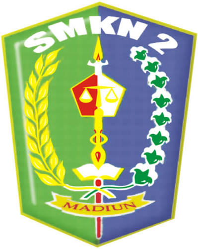
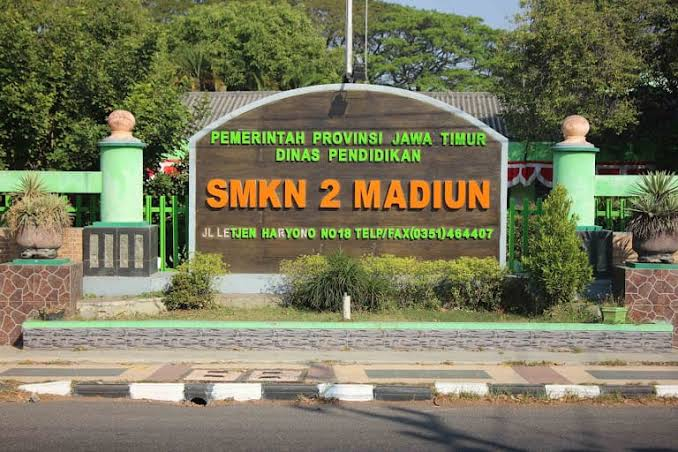

Mencetak generasi yang kompeten, profesional, berkarakter dan siap menghadapi masa depan.
Jelajahi Profil SekolahMengenal SMK Negeri 2 Madiun

SMK Negeri 2 Madiun merupakan lembaga pendidikan kejuruan negeri yang berlokasi di Kota Madiun, Provinsi Jawa Timur.
Sekolah ini berawal dari SMEA Negeri Madiun pada tahun 1963. Seiring perkembangan zaman, SMK Negeri 2 Madiun terus meningkatkan kualitas pendidikan, keterampilan, teknologi dan karakter peserta didik.
SMK Negeri 2 Madiun berkomitmen menghasilkan lulusan yang memiliki kompetensi, kreativitas, kedisiplinan dan siap bersaing di dunia kerja.
Website Sekolah